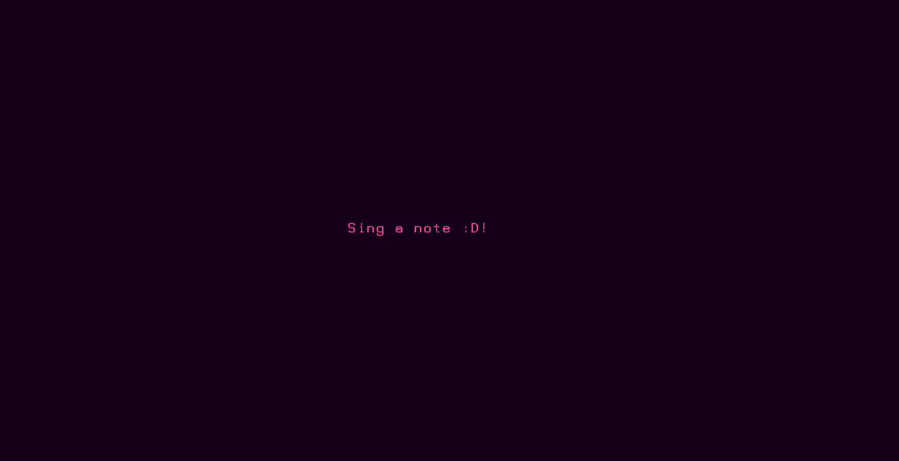

Overtone Music Generator
2018/Tool/Music This tool extracts the most prominent overtones within a singular sound source and then plays back found tones as a musical scale. The motivation behind doing this was due to an increased fascination with overtonal music, Ben Johnston's absolutely huge work with creating micro-tonal musical scales for his string quartet arrangements, throat singing, alternative/experimental musical scales, and studying the fundamental building blocks of the sonic soundscape around us.
The framework of this project circles around two ideas:
Knowing this, I figured that digitally analyzing and capturing these harmonic pitches would produce a scale that could be played in tandem with the acoustic source that created them. In order to do this, I utilized the Fast Fourier Transform(FFT), a tool often used in digital signal processing, to find the most prominent overtones/harmonics within a sound and them mapped them to my keyboard for playback. Within music, the FFT is frequently used in music synthesis, primarily in additive synthesis, but here I am using it to break down a sound into its parts and then turn it into scales.
Even though one can mathematically calculate these scales, as they are just integer multiples of the fundamental, I chose to utilize this method to do a more individualized analysis. There are many sounds that can be called inharmonic, meaning that their primary overtone frequencies stray from the numerical location of the harmonics. Even though these inharmonic frequencies may introduce dissonance into the captured scale, they are still fundamentally a part of the sound that created them. Instead of focusing on a clean and calculated scale that utilizes the accuracy of a mathematical formula, I am instead creating a musical scale from components.